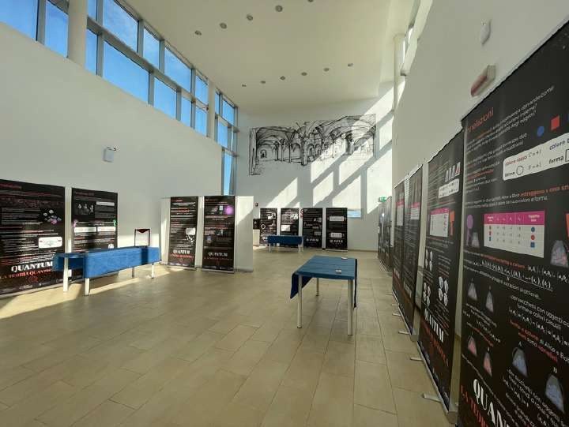
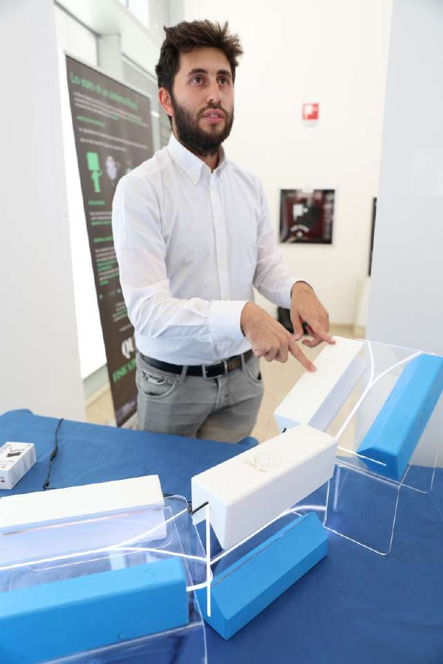
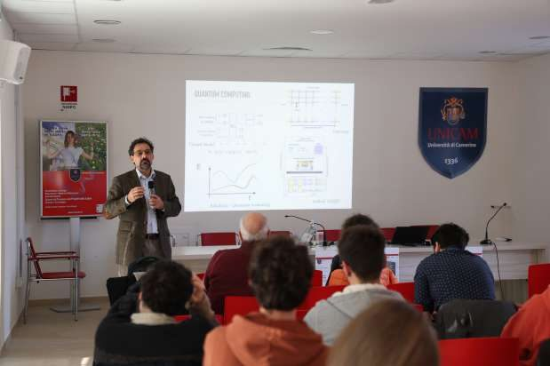
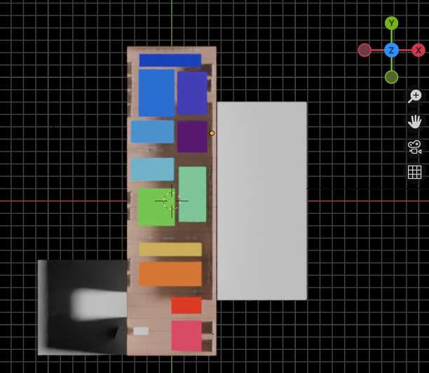
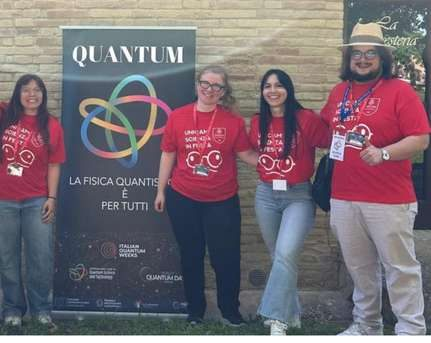

Mostra · Ottobre–dicembre 2025
QUANTUM – La fisica quantistica è per tutti
Una mostra sulla fisica quantistica all'Università di Camerino, a chiusura dell'Anno internazionale della scienza e della tecnologia quantistica. L'ho gestita dalla progettazione all'ultima visita.
- Ruolo
- Gestione completa e curatela
- Luogo
- Università di Camerino
- Partner
- NQSTI
- Pubblico
- Scuole superiori, insegnanti, cittadinanza

La mostra
QUANTUM ha chiuso l'Anno internazionale della scienza e della tecnologia quantistica (IYQ 2025) all'Università di Camerino, con il National Quantum Science and Technology Institute (NQSTI) come partner. Il percorso, basato sui materiali delle Italian Quantum Weeks, accompagna i visitatori dalla crisi della fisica classica ai primi esperimenti, fino a concetti come stato, misura ed entanglement e alle applicazioni di oggi: computer e crittografia quantistica.
Più che una mostra da guardare, è stata un'iniziativa di public engagement ad ampio spettro. Le classi delle scuole superiori hanno alternato la visita guidata ad attività interattive, basate sull'indagine e sul gioco. Per la cittadinanza ci sono stati eventi pubblici con ospiti, tra cui presentazioni di libri. I ricercatori dell'ateneo hanno tenuto seminari divulgativi per i visitatori.
Il progetto ha coinvolto anche chi lo ha realizzato. Ho selezionato e formato un team di cinque persone, dagli studenti universitari ai postdoc, che hanno guidato le visite e contribuito a costruire il racconto della mostra. Mi sono occupato di tutto il resto: progettazione degli spazi, curatela dei contenuti, prenotazioni, rapporti con le scuole e con il pubblico, rendicontazione.
Risultati
- visite registrate
- ~900
- classi raggiunte
- 33
- eventi pubblici con ospiti
- 3
- ricercatori coinvolti nei seminari divulgativi
- 10
- giovani guide selezionate e formate
- 5
Cosa hanno detto i visitatori
Le parole più ricorrenti nelle risposte aperte ai questionari degli studenti:
- fascino
- consapevolezza
- concretezza
Ho capito che la fisica è presente in molti fenomeni della vita quotidiana e della realtà”
Ho capito che il mondo microscopico funziona secondo regole molto diverse da quelle della fisica classica, e questo cambia il nostro modo di vedere la realtà.
Le attività



